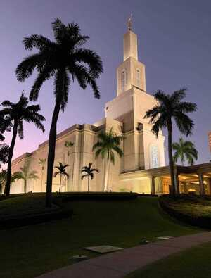
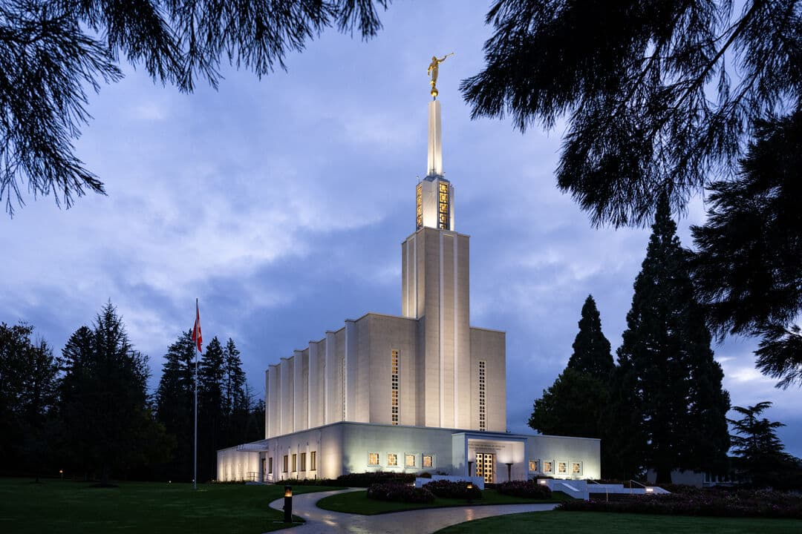
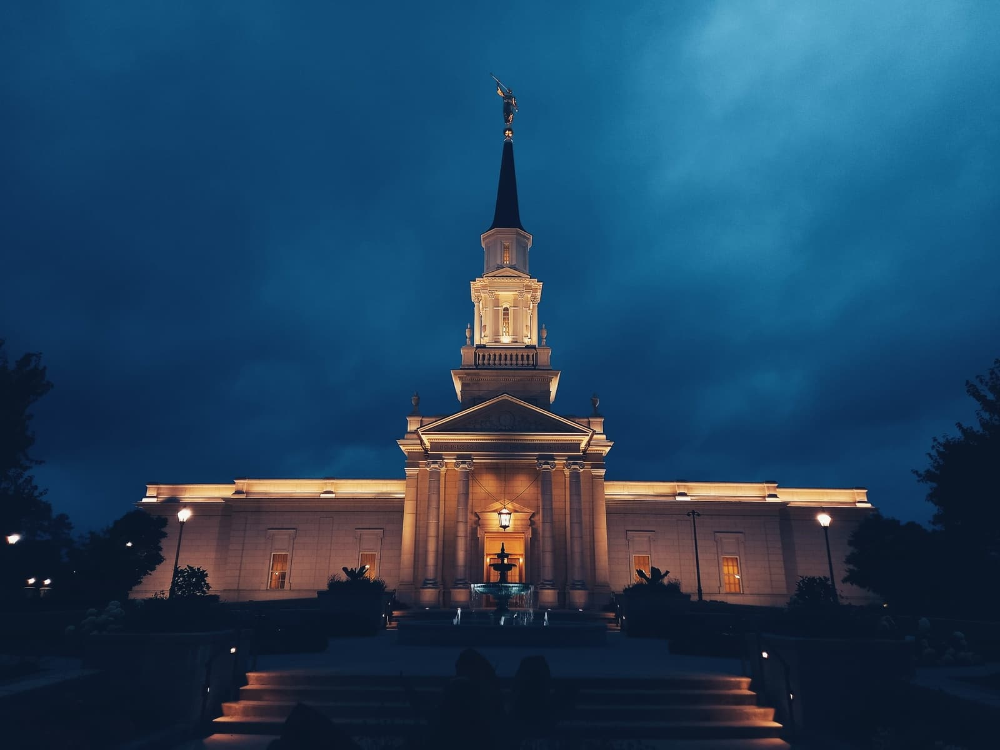
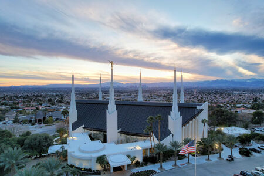
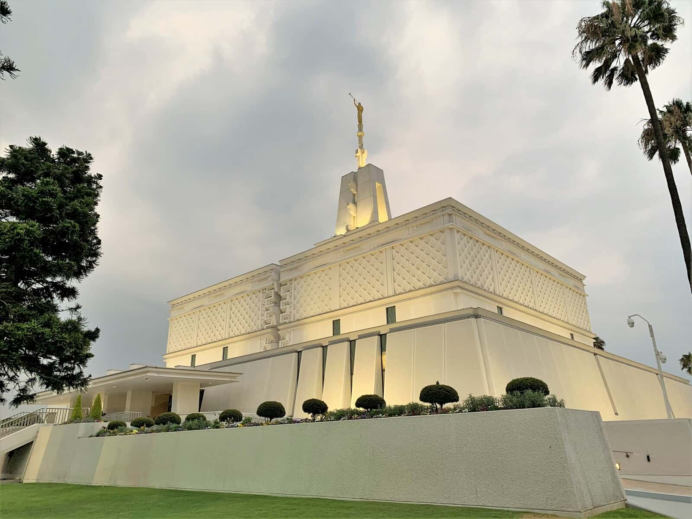
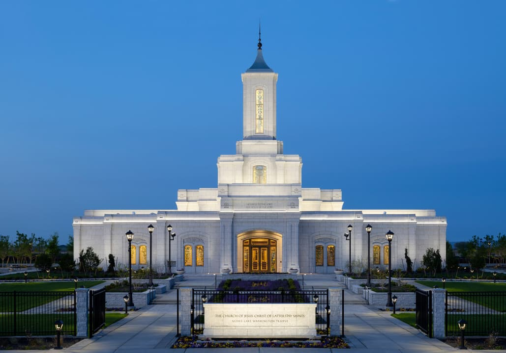
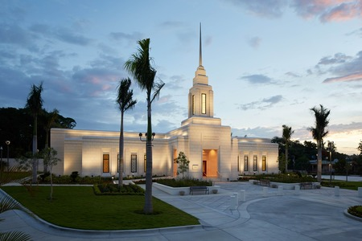

Temple Album
Home
Old
New
Large
Small
Home

Santo Domingo, Dominican Republic

Bern, Switzerland
Fortaleza, Brazil Temple

Hartford, Connecticut

Las Vegas, Nevada

Mexico City, Mexico

Moses Lake, Washington State
Mount Timpanogos, Utah

Port Au Prince, Haiti